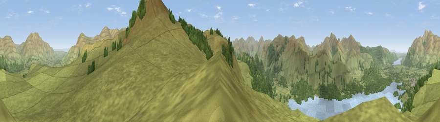

Viewpoint near Keswick
#10918 in England · top 55% of its area beats it · near KeswickThe view, rendered

A 360° render of this exact spot computed from the terrain model, tree cover and land cover — summer colours, afternoon light, calibrated against photographs of famous viewpoints. Real trees, hedges and buildings will differ in detail.
The panorama
Grey silhouette: terrain skyline in each direction (720 bearings, Earth curvature and refraction included). Dashed green: skyline with trees (+15 m) and buildings (+8 m) as obstacles. Blue strip: how far the ground is visible on each bearing.
Where the view opens
Wedge length = distance to the farthest visible ground on that bearing (vegetation-aware). Rings at 10, 25 and 50 km.
What fills the view
82% grassland · 13% woodland · 5% water
Angular shares of the visible panorama (visual magnitude), not map area. Landscape diversity 0.26 (0–1 Shannon).
Key numbers
More beautiful places nearby
The staircase of upgrades: each row has a higher view potential than everything closer. Driving times are estimates from straight-line distance, calibrated against real road routing — check an actual route before setting out.
| Place | Direction | Drive | Score |
|---|---|---|---|
| Viewpoint near Keswick | NW · 1 km | ~2 min | 63.8 |
| Bleaberry Fell | SE · 1 km | ~3 min | 71.1 |
| Viewpoint near Legburthwaite | SSE · 2 km | ~6 min | 71.6 |
| Causey Pike | W · 6 km | ~13 min | 77.2 |
| Viewpoint near Threlkeld | ENE · 6 km | ~13 min | 77.6 |
| Great Dodd | E · 6 km | ~13 min | 80.4 |
| Viewpoint near Legburthwaite | SE · 7 km | ~14 min | 84.5 |
| Viewpoint near Applethwaite | NNW · 8 km | ~17 min | 86.7 |
54.57116, -3.11869 · source: screening · position refined by local search. Computed location — check access rights before visiting.